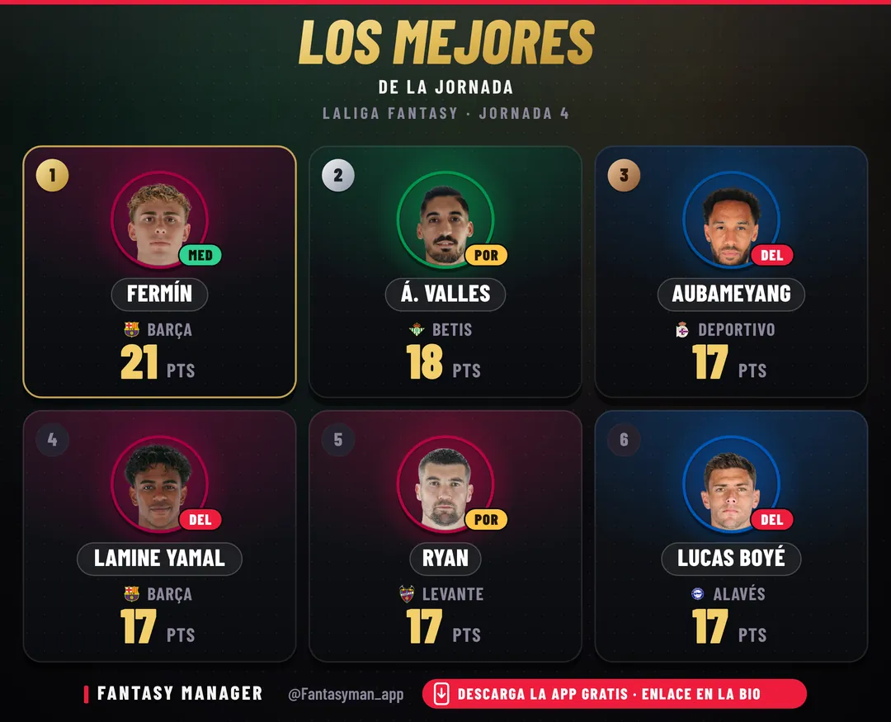

Resumen de la jornada 4
Del viernes 4 de septiembre al lunes 7 de septiembre · puntos oficiales con los de DAZN, a lunes 16 de noviembre a las 22:42
Los mejores de la jornada
| # | Jugador | Pts | Media |
|---|---|---|---|
| 1 | 21 | 9,3 | |
| 2 | 18 | 9,2 | |
| 3 | 17 | 13,1 | |
| 4 | 17 | 7,4 | |
| 5 | 17 | 6,8 | |
| 6 | 17 | 5 | |
| 7 | 16 | 7,1 | |
| 8 | 16 | 5,7 | |
| 9 | 16 | 2,5 | |
| 10 | 15 | 6,3 |
Puntos de la jornada y media de toda la temporada.
Once ideal de la jornada 4
Lo que ya se jugó, no una recomendación. Cómo se elige.

Resultados y MVP de cada partido
 Betis1-0Real Madrid
Betis1-0Real Madrid vie 4, 21:00
vie 4, 21:00 MVP: Á. Valles 18
MVP: Á. Valles 18 Athletic3-0Atlético
Athletic3-0Atlético sáb 5, 16:15
sáb 5, 16:15 MVP: Unai Simón 13
MVP: Unai Simón 13 Rayo3-2Racing
Rayo3-2Racing sáb 5, 18:30
sáb 5, 18:30 MVP: Camello 15
MVP: Camello 15 Villarreal2-3Deportivo
Villarreal2-3Deportivo sáb 5, 21:00
sáb 5, 21:00 MVP: Aubameyang 17
MVP: Aubameyang 17 Valencia0-5Barça
Valencia0-5Barça dom 6, 16:15
dom 6, 16:15 MVP: Fermín 21
MVP: Fermín 21 Málaga0-0Levante
Málaga0-0Levante dom 6, 18:30
dom 6, 18:30 MVP: Ryan 17
MVP: Ryan 17 Alavés5-2Osasuna
Alavés5-2Osasuna dom 6, 18:30
dom 6, 18:30 MVP: Lucas Boyé 17
MVP: Lucas Boyé 17 Espanyol1-1Sevilla
Espanyol1-1Sevilla dom 6, 21:00
dom 6, 21:00 MVP: Edu Expósito 10
MVP: Edu Expósito 10 Getafe1-1Celta
Getafe1-1Celta lun 7, 19:00
lun 7, 19:00 MVP: Satriano 11
MVP: Satriano 11 Elche2-3Real Sociedad
Elche2-3Real Sociedad lun 7, 21:30
lun 7, 21:30 MVP: Ochieng 16
MVP: Ochieng 16
Los que doblaron su media
| Jugador | Pts | Media |
|---|---|---|
| 17 | 5 | |
| 13 | 3,9 | |
| 10 | 3,1 | |
| 11 | 3,4 | |
| 16 | 5,7 | |
| 17 | 6,8 |
6 sacaron el doble de su media o más, con 10 puntos o más; el que más se pasó, Lucas Boyé: 17 con 5 de media.
Los peores de la jornada
| Jugador | Pts | Media |
|---|---|---|
| -4 | 1,6 | |
| -4 | 2,7 | |
| -2 | 0,3 | |
| -2 | 1,6 | |
| -2 | 0,1 | |
| -2 | 1,5 |
6 terminaron restando puntos.
Los equipos que más puntos dieron
Los que más
| Equipo | Pts |
|---|---|
| 151 | |
| 116 | |
| 93 | |
| 93 | |
| 86 |
Los que menos
| Equipo | Pts |
|---|---|
| -1 | |
| 21 | |
| 38 |
La semana del mercado
Del 1 de septiembre al 3 de septiembre hubo 2 cambios de mercado entre la jornada 3 y el cierre de cláusulas de la 4. Raphinha fue el que más se revalorizó: 6 M en esos días. En el otro lado, Diomande perdió 2,9 M. El mejor negocio, sumando lo que subió y sus puntos de la jornada a 100 mil cada uno (lo que paga LaLiga): Raphinha, 6,8 M.
Ganaron
| Jugador | Semana |
|---|---|
| +6 M | |
| +4,8 M | |
| +4,3 M | |
| +4,2 M | |
| +4,1 M |
Perdieron
| Jugador | Semana |
|---|---|
| -2,9 M | |
| -2,6 M | |
| -2,6 M | |
| -2,5 M | |
| -2,4 M |
Negocio
| Jugador | Subida + puntos |
|---|---|
| 6,8 M | |
| 5,9 M | |
| 4,9 M | |
| 4,9 M | |
| 4,7 M |
Valor al primer cambio de mercado tras la jornada 3 frente al último antes del cierre. Cómo se mueve el valor, en valor de mercado.
La jornada 4, en corto
Se jugó del viernes 4 de septiembre al lunes 7 de septiembre y se marcaron 35 goles, 3,5 por partido, por encima de los 2,9 de las demás jornadas. El resultado más abultado fue el Valencia 0-5 Barça.
Nadie superó los 21 puntos de Fermín, del Barça. Lucas Boyé sacó 17, más del doble de lo que suele (5 de media).
El once ideal de lo que se jugó, en 3-4-3, suma 162 puntos. Entre equipos, el Barça dio 151 puntos y el Valencia se quedó en -1. 6 jugadores acabaron en negativo; el peor, Arnau con -4.
Puntos oficiales de LaLiga Fantasy, con los de DAZN. Cómo hacemos el resumen.